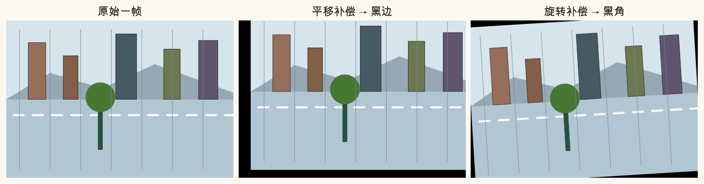
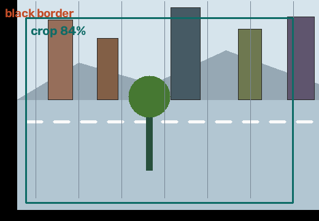
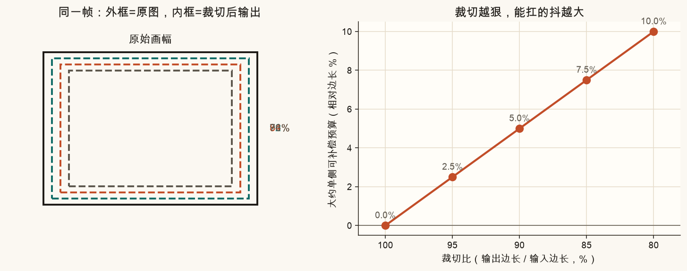
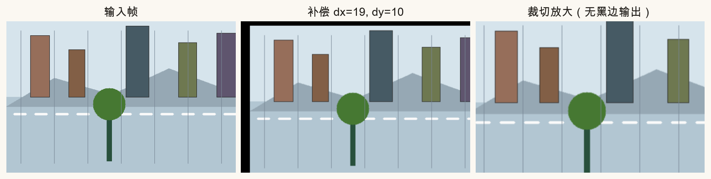
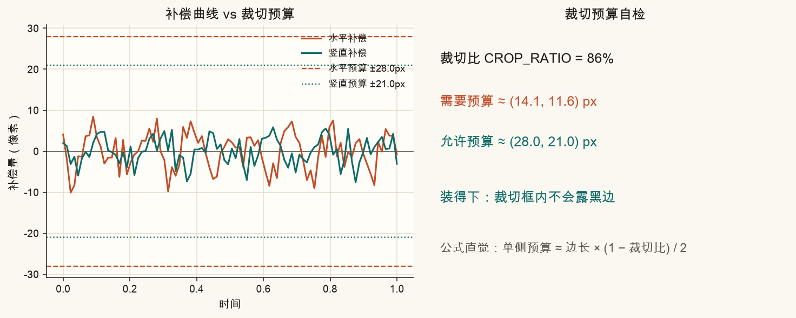
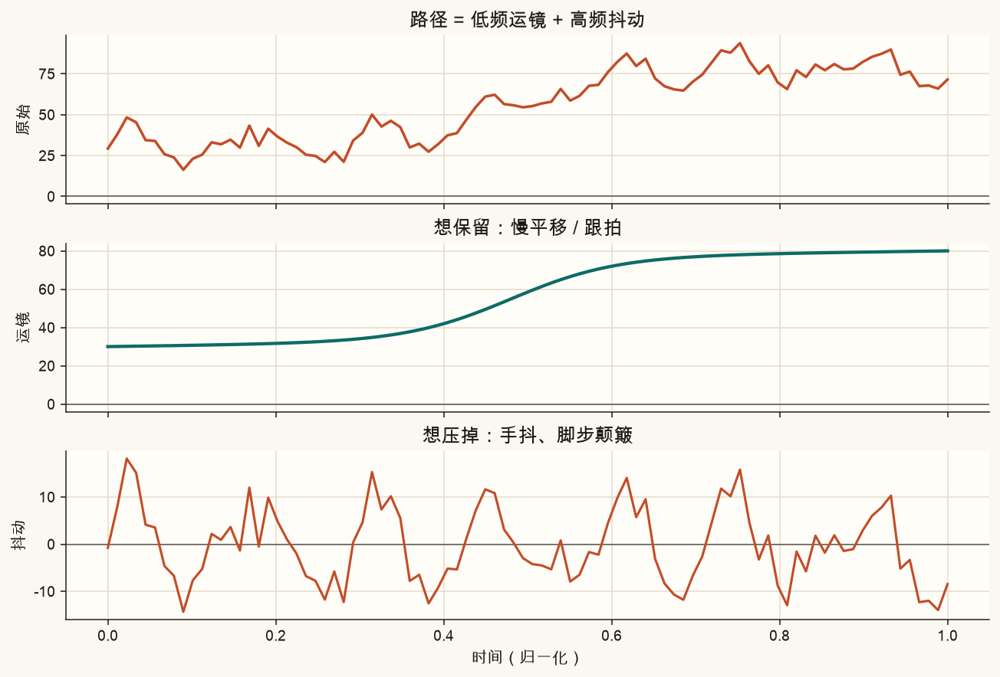
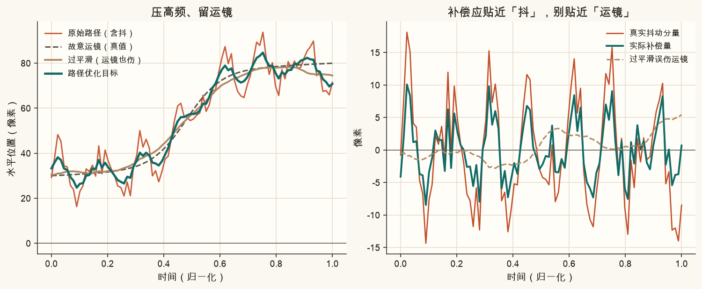
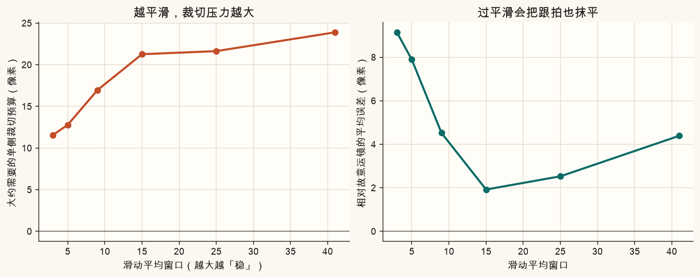
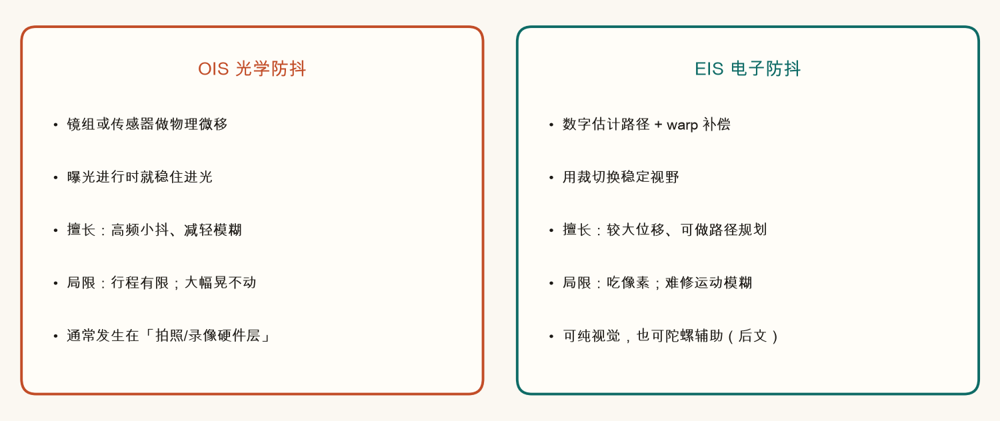
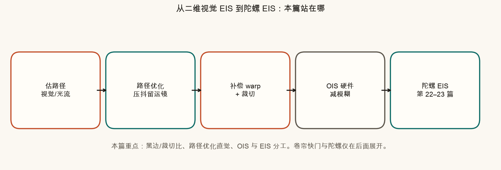

第 20 篇 · 稳像收尾与总览 · 约 50 分钟
第 19 篇把晃动路径扳到平滑目标后，画面边缘常会露出黑边。本篇先搞清楚黑边从哪来、裁切比怎么定；再把「路径优化」说成人话——压掉高频手抖，尽量留下故意运镜；最后对比光学防抖 OIS 与电子防抖 EIS，为后面的陀螺仪 EIS 铺路。
回顾第 19 篇的一句话：防抖常做的事，是估计「这一帧相对理想路径偏了多少」，再反向 warp把画面扳回去。
问题来了：原图像素是有限的矩形。你把整幅图往右挪 20 像素，左边就空出一条没有内容的缝——渲染时通常填成黑色。这就叫黑边。若补偿里还有旋转，四个角也会露出黑角。

生活类比：你把桌上的照片往右推一点，桌布左边就露出一块。防抖算法在「推照片」；裁切则是「只拍中间还能被盖住的区域」，假装桌布一直铺满。

裁切比可以先记成：
裁切比 ＝ 输出边长 ÷ 输入边长
例如输入宽 1920，输出宽 1728，裁切比约 0.90（常说「裁到 90%」）。比越小，中间留下的越少，视野越窄，但四周「安全垫」越厚——能容纳的补偿位移越大。
正方形画幅、中心裁切时，有一个好记的预算公式（单侧）：
单侧可补偿预算 ≈ 边长 × (1 − 裁切比) / 2
白话：裁切比 0.90、边长 400 像素 → 单侧大约还能挪 400 × 0.10 / 2 = 20 像素。某帧水平补偿若超过 20，裁切框就会撞上黑边（或你得再缩小裁切比）。



工程里裁切比怎么定？常见三条路：（1）固定比例，如 0.88～0.95，简单可预期；（2）先跑完全片，看最大补偿，再反推最小够用的比；（3）路径优化时把「裁切框」写成约束，强迫目标路径别离开安全区太远。本篇脚本演示的是（1）+（2）的直觉。
第 19 篇若只用「很大的滑动平均」，画面会变稳，但也可能把故意运镜一起抹掉：你本来想跟拍一个人从左走到右，结果成片像相机被粘在原地慢慢漂。
把路径拆成两层会好懂很多：

本篇用的极简做法：
follow_strength 往原始路径拉一点，避免漂得太远；
论文里常见的「L1 最优相机路径」等，会显式写三项：要平滑、要靠近原路径、还要落在裁切允许的范围内。本篇不展开求解器，但三角关系已经齐了：稳 ↔ 跟得住运镜 ↔ 裁切预算。
平滑窗口拉大，有两笔账同时变贵：

实操口令：先用较小窗口压掉最刺眼的抖；若仍晃，再略加大，同时盯着裁切比和跟拍是否还在。不要一上来就「平均半秒」。
手机广告里的「光学防抖 / 电子防抖」不是同一种机器：

| OIS 光学防抖 | EIS 电子防抖 | |
|---|---|---|
| 做什么 | 镜组或传感器物理位移 | 估路径 → warp → 裁切 |
| 何时生效 | 曝光过程中 | 成像后（或实时管线里） |
| 擅长 | 高频小抖；减轻运动模糊 | 较大位移；可规划路径 |
| 不擅长 | 行程有限，大幅晃不动 | 吃像素；难「修好」已经糊掉的曝光 |
| 和裁切 | 基本不靠裁切换稳 | 几乎总要裁一圈安全边 |
所以你会看到组合拳：OIS 先把「糊」压住一点，EIS 再把「晃」的路径修顺。纯软件 EIS 再强，也变不出曝光瞬间没记下来的高频细节——这就是为什么光学仍然重要。
到目前为止，路径主要来自视觉：特征跟踪或光流估帧间变换，再累积。后面还会遇到两个硬问题：

读完本篇，你应能回答：为什么 EIS 一定要谈裁切？为什么「越稳越好」是错的？OIS 解决的和 EIS 解决的差在哪？——这些是读陀螺 EIS 前的共同语言。
不装 Python 也能建立手感。上面画布是「原画幅」；青色框是裁切输出。下面曲线是路径：橙色原始，青色目标。
在系列根目录（能看见 index.html）激活虚拟环境后：
MPLCONFIGDIR=/tmp/mpl-cache .venv/bin/python code/ch20_crop_ois.py成功时终端打印「自检通过」，并写出课文对照图与「改这里」三张图：
assets/figures/ch20_black_border.png、ch20_crop_ratio.png、ch20_freq_split.png、ch20_path_optimize.png、ch20_smooth_cost.png、ch20_ois_eis.png、ch20_pipeline.png、ch20_before_after.png、ch20_budget.pngassets/images/ch20_crop_box.pngch20_my_path.png、ch20_my_budget.png、ch20_my_crop.png（及 ch20_my_crop_view.png）打开 code/ch20_crop_ois.py 顶部「改这里」。只影响 ch20_my_*.png；课文图仍按固定参数重画。
CROP_RATIO = 0.86 改成 0.95，运行后看 ch20_my_budget.png：允许预算变窄，更容易「装不下」。0.75，预算变宽，但 ch20_my_crop.png 视野明显更窄。SMOOTH_WINDOW = 9 改成 25，看 ch20_my_path.png：更稳，但跟拍转折更钝，预算更吃紧。SHAKE_AMP 从 22 改成 8 再改成 35，观察预算自检从「装得下」到「装不下」。先自己答，再展开。
因为图像是有限矩形。把内容平移/旋转到「更稳」的位置后，画布边缘会露出没有像素的区域，通常被填成黑色。这是几何空缺，不是显示坏了。
视野变窄（输出只保留原图更中心的一块）。单侧可补偿预算变大：大约按边长 × (1−比)/2 增加，所以能扛更大的补偿位移，更不容易露黑边。
优化目标是压高频抖动、尽量保留故意运镜（跟拍/平移）。抹成直线等于过平滑：抖没了，运镜也没了，还往往需要更大裁切，成片发飘。
OIS 在曝光时用硬件微移稳住进光，更擅长减轻运动模糊。EIS 靠数字 warp + 裁切换稳定视野，几乎总要裁一圈；它难把已经糊掉的曝光「变清晰」。
纯视觉在低纹理、运动模糊、快速甩动时容易估不稳；陀螺直接测角速度，能为姿态/逐行补偿提供另一路信号。同时 Rolling Shutter 让「整帧一个变换」不够用——这些是第 21–23 篇的主题。
二维稳像把「整帧」当成同一时刻。手机传感器却常常是一行一行曝光的。下一篇用动画看清：竖线为什么变斜、轮子为什么变椭圆，以及为什么稳像和光流都会被卷帘快门污染。